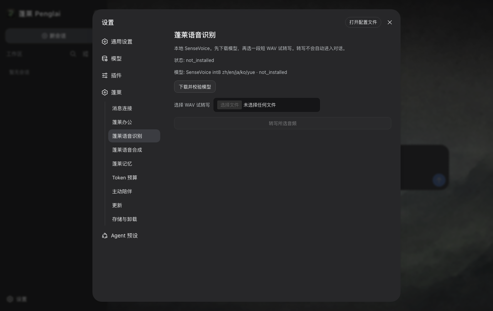
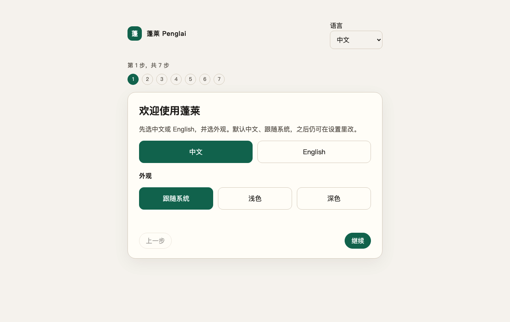

蓬莱办公
读取、创建、修改、预览和保存 DOCX、XLSX、PPTX 与 PDF。写入前有计划和确认，PDF 自带中文字体，不要求用户安装 LibreOffice。
这次真正变了什么
模型、工具、Workspace、Session、Turn 和会话界面都归官方 DSH。蓬莱负责那些不起眼却决定“能不能交给普通人”的部分：安装、首次配置、本地路径、进程守护、插件启停、升级与数据清理。0.5.7 继续补齐办公、记忆、消息连接和 Windows 生命周期，并把三端安装包、依赖清单与更新签名锁定到同一份发布源码。

安装包里已经有
读取、创建、修改、预览和保存 DOCX、XLSX、PPTX 与 PDF。写入前有计划和确认，PDF 自带中文字体，不要求用户安装 LibreOffice。
安全的项目事实会自动整理到当前 Workspace；整理候选会调用你选择的模型供应商，记录与召回留在本机。个人事实仍需明确保存，记忆绝不会跨 Workspace 召回。
微信、飞书、钉钉、企业微信、QQ、Slack、Telegram 与 Discord 统一进入 @penglai/im，按平台使用扫码、设备注册或官方 Token。0.5.7 不捆绑 WhatsApp 社区协议运行时。
SenseVoice 负责语音识别，MOSS-TTS 负责语音生成。会话 Read 朗读原文，不负责翻译；试听与 Read 都可再次点击停止。插件代码随包，较大的模型权重会在启用时说明后再下载。
只有你主动开启后才会定时联系，并受安静时间、每日次数和指定消息渠道约束。默认不会擅自运行。
插件列表来自不可变 GitHub Release。兼容的新插件可以通过签名目录加入，不必只为更新一张列表重发桌面版本。



第一次打开，不该是一道坎
选语言和外观，了解本地数据边界，从官方模型列表选择供应商和模型，测试自己的 API Key，选一个真正的 Workspace，然后发送第一条 DSH 消息。可以返回、重试和重启续接；失败不会被伪装成成功。

为什么叫蓬莱
我做了十多年网络、安全和运维，却不是软件开发者。蓬莱一开始就想证明一件事：AI 时代，普通人也能为自己造工具。
从命令行到窗口，再到每个人口袋里的手机，计算机一直在降低使用门槛。Agent 也应该走同一条路。会发消息，就应该能找到自己的助手；它替你做了什么、能看什么、花了多少，也应该讲得清楚。
蓬莱已经重做过不止一次。0.5 最重要的决定，是停止再造一个 Agent，转而站在 DeepSeek Harness 这个开源核心上，把安装、办公、记忆、手机消息和本地语音一件件做好。旧版本留在 Git 历史里讲这段路，但不会和新的 DSH 核心混在一起。
陈克文 / Kevin Chen
边界说在前面
没有蓬莱账号或蓬莱运营的遥测后端。official DSH 自带 session-telemetry adapter 和一个休眠的 DeepSeek OTLP 地址。蓬莱会在所有 profile patch 之后硬性禁用该行，因此 owned DSH 不会创建 SDK provider 或上传管线。没有云端记忆同步；模型调用仍会把本次任务需要的内容发给你选择的模型供应商。
macOS 未公证。安装包是 ad-hoc 签名；Windows 没有 Authenticode。Gatekeeper 或 SmartScreen 可能提醒。
插件不是沙箱。签名、哈希、权限清单和回滚保护的是分发链路，但 DSH 插件仍与本地 DSH 共享进程权限。
会话附件仍有限制。官方 DSH rc.2 的输入框支持文字和图片，不宣称直接发送普通办公文档；微信/飞书文件与蓬莱办公选择的 Workspace 文件走受限 artifact 管线。
Penglai 0.5.7
bfbaec4b9f4b627abd41e793abae6b68246d0f00d8e9c5ca003d079e1e3667c8
macOS · Intel382.5 MiB · x86_64 Macab696fc92a2b1af538eed6008c8389ddc945d9dce39d85b16053cf60d8e2655e
Windows · x64339.4 MiB · 64 位安装器cb4687e621d951d6d8ba4cf8428f4723f35c9827fa70ac542d4d3d928d5d882a
0.5.7 当前以不可变 GitHub Release 为公开下载源，三个安装包来自源码 ce01d4dea59af72422071e357760a040f19b8e3d。完整 SHA256SUMS、SBOM、第三方声明与签名元数据同页提供；更新不会静默执行。